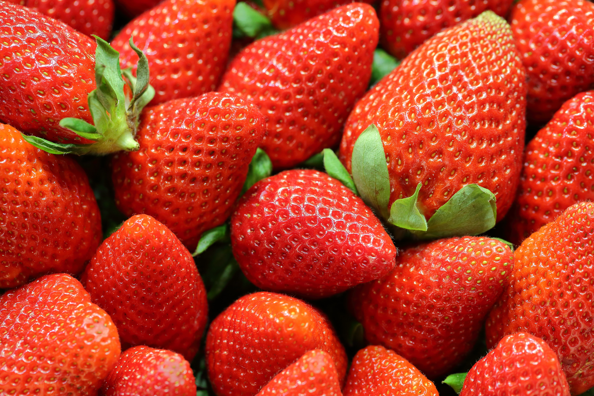
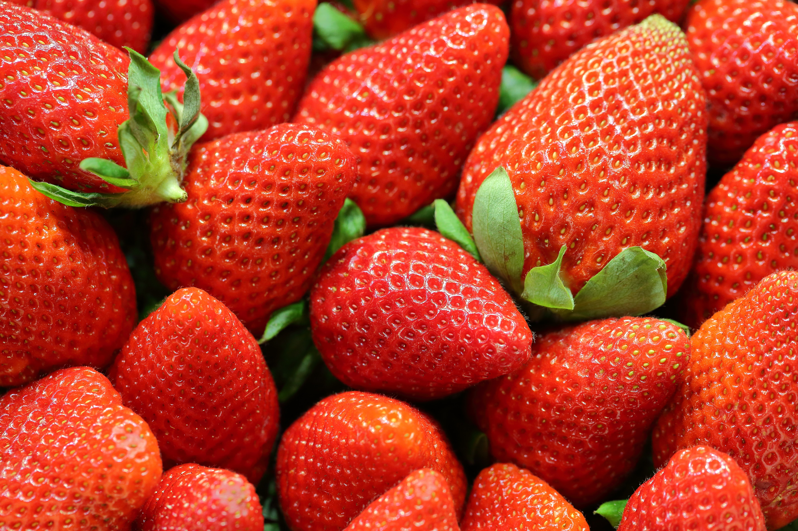
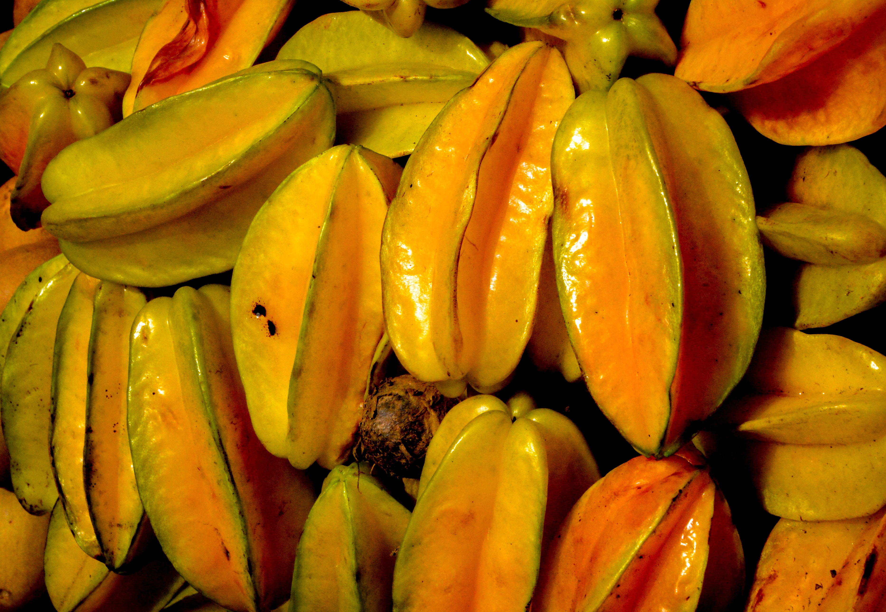
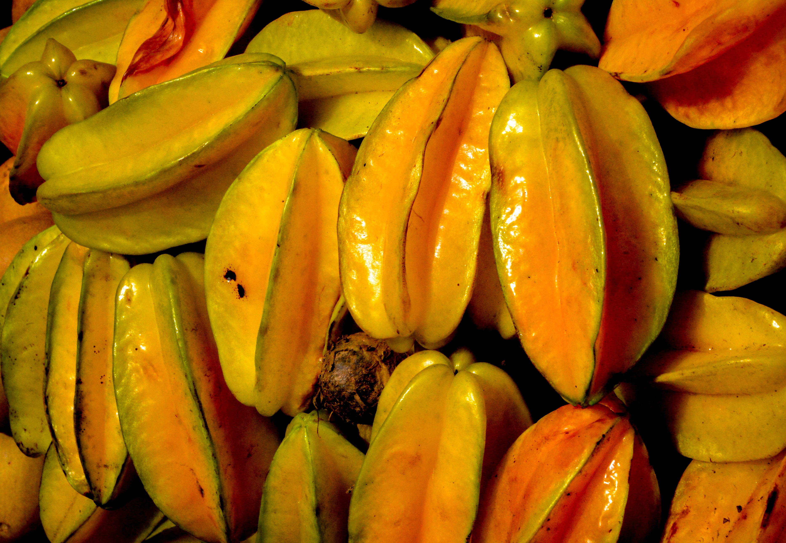

Overview
Purpose
The purpose of this website is to provide information about the crops in each season of stardew valley, make it ready accessable and easy to read, and sumarize the information. This will include things like g per day grown of each crop, the experience gained per day of each crop, etc.
Audience
My audience would be the Stardew Valley community, but, honestly, myself as well, I can't seem to find this information online, so I wanted to put something together myself that could also be used by others who play the game.
Branding
Website Logo

Style Guide
Color Palette - most of my design choices I would like to have be similar to the game itself, to avoid confusion, but I can't add it in until I recieve permision from Concerned Ape, so I'm going to not be able to add that for the moment.
Palette URL: https://coolors.co/d9f4ff-0e88fa-2db966| Primary | Secondary | Accent 1 | Accent 2 |
|---|---|---|---|
| [#0e88fa] | [#2db966] | [#d9f4ff] |
Typography
Heading Font: Pending permision from Concerned Ape
Paragraph Font: Pending permision from Concerned Ape
Normal paragraph example
This would be in a grid: crop: blue jass seed price: 30g sell price: 50g growth time: 7 days experience: 10 g/day: 2.86 exp/day: 1.43 This information is then repeated for all crops in spring.
Colored paragraph example
To summarize the information on the spring crops, if you can get them, strawberries are by far the best crop. Your first year should mostly be filled with potatoes, which are easy to get and give decent money. Kale can be good if you need farming experience in a pinch. Rhubarb looks decent, but on closer inspection actually is similar to potatoes in yeild. Flowers are horrible to sell normally, use them for decoration or to flavor honey. Coffee can be really good if you have the space and energy to water them.
Navigation
Site Map
Content
Home page
Welcome to Stardew Crop Info! This site aims to address a problem I personally have encountered quite a bit. I cannot find any for sure, 100% accurate and up-to-date information on which crops are best for each season. So I thought "Why not just make it?" Gotta choose something for the school project, right? This site will contain all the basic statistics for crops in the three major seasons of the game, including g and experience per day. Ya know, just in case you need to calculate the number of kale you need to hit farming 6 before summer starts.
Images for the Home page
Spring
Spring is the least profitable season, but it's also the first season, that means it's important to get a head start on your farm. Things like which crops you can afford, or which ones will finish before the season does are all very important to consider as you plan ahead for the first season, or perhaps you're in your second year, looking to maximise profit. (The answer is strawberries folks.) Here's the information for all the spring crops, with a summary below:
Images for the Page 2
 

Summer
Summer is the most profitable season by far, if you're ready that is. With planning and preparation, you can make millions in any given summer, but your first one will probably be a bit more low key (it is supposed to be a relaxing game after all! Not that I ever seem to be able to relax when I play it) If you played spring well, you should have some quality sprinklers year one, which means we're in business! Go ahead and use this info to plan your season out! And remember, variety can be nice sometimes if you're getting bored of starfruit!
Images for the Page 3
 

Fall
Fall is the last time to plant before winter (Yeah, I know winter seeds exist, they aren't worth mentioning.) While not quite as profitable as summer, it does still have some strong options for crops. There's quite a bit of variety, and fall also has the best flower available, so if beehives are your thing, go crazy! This is my personal favorite season in Stardew, it looks so great it makes it easy for me to decorate, since I don't do very well on my own! Lots of good looking crops to pick from here!
Images for the Page 4

Wireframes
Create three wireframes for your site. One for each page and list them here
Home
Spring

Summer
Fall